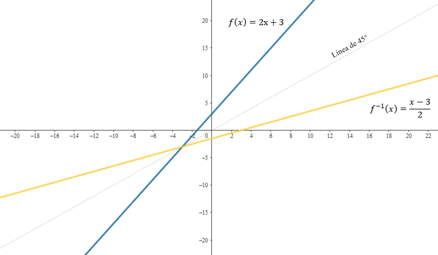

10 9. Funciones inversas
Las funciones inversas sirven para revertir el efecto de una función, permitiéndonos calcular el valor original de entrada (\(x\)) a partir de un valor de salida (\(y\)). Por ejemplo, si una función \(f(x)\) convierte \(x = 2\) en \(y = 5\), la función inversa \(f^{-1}(x)\) tomará \(y = 5\) y devolverá \(x = 2\). Esto es como un “camino de regreso” para la operación de la función original.
Para que una función tenga una inversa, debe ser biyectiva, lo que significa que es inyectiva (cada valor de salida corresponde a un único valor de entrada) y sobreyectiva (todos los valores posibles de salida están cubiertos). Sin estas propiedades, no sería posible garantizar que cada valor de salida se asocie de forma única con un valor de entrada.
La inversa de una función \(f(x)\) se denota como \(f^{-1}(x)\). Al componer una función con su inversa, obtenemos el valor original, es decir, \(f(f^{-1}(x)) = x\) y \(f^{-1}(f(x)) = x\). Esto refleja que las funciones inversas permiten deshacer el proceso realizado por la función original, asegurando que regresamos al punto de partida.
10.1 9.1. Funciones lineales
Las funciones lineales son aquellas en las que la relación entre las variables de entrada y salida es directa y proporcional. Estas funciones tienen una forma general sencilla: \(f(x) = mx + b\), donde \(m\) representa la pendiente, es decir, la inclinación de la recta, y \(b\) es el punto donde la recta cruza el eje \(y\). Su representación gráfica es siempre una línea recta.
Las funciones inversas de las lineales permiten revertir esta relación. Para calcular la inversa, reorganizamos la ecuación para despejar \(x\) en términos de \(y\). Por ejemplo, si la función es \(f(x) = 2x + 3\), su inversa será \(f^{-1}(x) = \frac{x - 3}{2}\). Esto significa que a partir de un valor de salida \(y\), podemos encontrar el valor de entrada original \(x\).
Gráficamente, si consideramos la función \(f(x) = 2x + 3\) y su inversa \(f^{-1}(x) = \frac{x - 3}{2}\), observamos que ambas son simétricas respecto a la línea diagonal de 45 grados, \(y = x\). Esto implica que cada punto de la función original \((x, y)\) se refleja en la inversa como \((y, x)\). Por ejemplo, para la función \(f(x)\), si \(x = 1\), entonces \(f(1) = 5\), lo que genera el punto \((1, 5)\). En la inversa \(f^{-1}(x)\), si \(x = 5\), obtenemos \(f^{-1}(5) = 1\), lo que corresponde al punto \((5, 1)\).

En la práctica, estas funciones inversas son útiles para resolver diversos problemas. Por ejemplo, pueden aplicarse para calcular el tiempo necesario para recorrer una distancia conocida, suponiendo que se viaja a una velocidad constante, o para determinar un valor inicial a partir de un resultado observado, como en situaciones financieras o experimentales.
10.2 9.2. Exponentes y logaritmos
Las funciones exponenciales y logarítmicas están profundamente relacionadas, ya que son inversas entre sí. Esto significa que si una función exponencial tiene la forma \(f(x) = a^x\), su inversa será \(f^{-1}(x) = \log_a(x)\), donde \(\log_a(x)\) denota el logaritmo de base \(a\). En términos prácticos, aplicar una función exponencial y luego su inversa nos devuelve al valor original. Estas funciones son fundamentales en disciplinas como la física, la química y la economía debido a su capacidad para modelar fenómenos de crecimiento y descomposición.
En la práctica, los logaritmos simplifican cálculos que de otro modo serían complejos. Por ejemplo, en procesos de desintegración radiactiva, los logaritmos se utilizan para determinar cuánto tiempo se necesita para que una sustancia alcance una concentración específica. También son esenciales en química para medir el pH, que se calcula como el logaritmo negativo de la concentración de iones de hidrógeno en una solución. Si una solución tiene una concentración de \(10^{-7}\) moles de iones de hidrógeno por litro, su pH es \(7\), lo que refleja el uso directo de la función logarítmica de base 10.
Gracias a su versatilidad, estas funciones permiten modelar fenómenos naturales, resolver ecuaciones exponenciales y logarítmicas, y abordar problemas en una amplia gama de áreas científicas y técnicas.
10.3 9.3 Ejemplos
Ejemplo 1
Encuentra la función inversa de:
\(f(x) = 3x - 7\)
Para encontrar la función inversa de \(f(x) = 3x - 7\), seguimos un procedimiento paso a paso. Primero, reescribimos la función reemplazando \(f(x)\) por \(y\), lo que nos da \(y = 3x - 7\). Esto facilita trabajar con la ecuación de forma más clara.
El siguiente paso es despejar \(x\) en términos de \(y\). Sumamos \(7\) a ambos lados de la ecuación, obteniendo \(y + 7 = 3x\). Luego, dividimos ambos lados entre \(3\) para aislar \(x\), lo que resulta en \(x = \frac{y + 7}{3}\).
Finalmente, sustituimos \(y\) por \(f^{-1}(x)\) para expresar la inversa en términos de \(x\). Esto nos da la ecuación \(f^{-1}(x) = \frac{x + 7}{3}\), que representa la función inversa de \(f(x)\).
Por lo tanto, el resultado final es \(f^{-1}(x) = \frac{x + 7}{3}\).
Ejemplo 2
\(f(x) = \ln(x - 2)\)
Para encontrar la función inversa de \(f(x) = \ln(x - 2)\), seguimos un procedimiento claro y organizado. Primero, reescribimos la función utilizando \(y\) en lugar de \(f(x)\), obteniendo \(y = \ln(x - 2)\). Este paso nos ayuda a trabajar directamente con la ecuación.
A continuación, aplicamos la función exponencial a ambos lados para eliminar el logaritmo natural. Esto nos lleva a \(e^y = x - 2\), lo que simplifica la relación entre \(x\) y \(y\). Luego, despejamos \(x\) sumando \(2\) a ambos lados de la ecuación, resultando en \(x = e^y + 2\).
Así, al sustituir \(y\) por \(f^{-1}(x)\), obtenemos la función inversa en términos de \(x\). Esto da como resultado \(f^{-1}(x) = e^x + 2\), que representa la inversa de la función original.
Ejemplo 3
\(f(x) = \frac{x + 1}{2x - 3}\)
Para determinar la función inversa de \(f(x) = \frac{x + 1}{2x - 3}\), seguimos un procedimiento metódico. En primer lugar, reemplazamos \(f(x)\) por \(y\), de modo que la ecuación queda como \(y = \frac{x + 1}{2x - 3}\). Este cambio facilita trabajar directamente con \(x\) y \(y\).
Seguidamente, eliminamos el denominador multiplicando ambos lados por \(2x - 3\), lo que nos lleva a \(y(2x - 3) = x + 1\). Luego expandimos y reordenamos para agrupar los términos que contienen \(x\) en un lado de la ecuación, obteniendo \(2xy - x = 3y + 1\). Factorizamos \(x\) en el lado izquierdo, resultando en \(x(2y - 1) = 3y + 1\). Finalmente, despejamos \(x\), quedando \(x = \frac{3y + 1}{2y - 1}\).
Al sustituir \(y\) por \(f^{-1}(x)\), obtenemos la forma de la función inversa. Esto nos lleva a \(f^{-1}(x) = \frac{3x + 1}{2x - 1}\), que representa la inversa de la función dada.